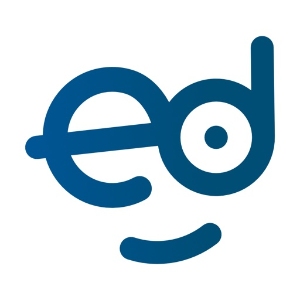
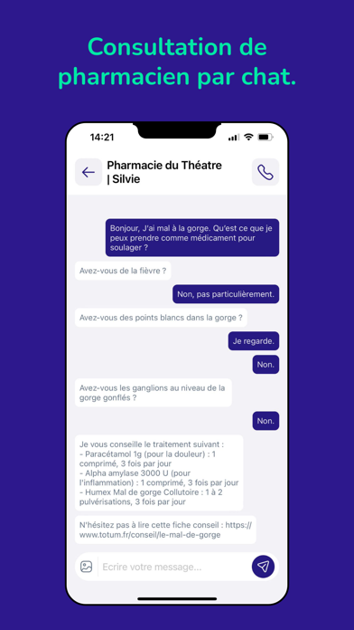

Totum Pharmaciens x EdRecent Ed reviews do not ask for more surface area. They ask for certainty: the message sent, the login recovered, and the patient no longer guessing whether the pharmacy ever saw the request.

Ed already has the right user behavior target. The opportunity is to make the most sensitive interaction feel auditable and safe: upload, send, recover, confirm. That is what patients remember.
The negative Android reviews are concentrated on login failure, missing codes, and messages that appear to vanish after send.
Livmed's visible iOS rating base is 49x larger than Ed's, which means trust and convenience expectations are already well established in the French pharmacy app market.
The concept adds server receipts, pharmacy acknowledgement, saved drafts, and multi-path recovery without bloating the core product.
This is intentionally boring in the right way. Reliability wins here because the app is sitting between a patient, a prescription, and a local pharmacy workflow.
Prototype thesis: keep the current Ed behavior model, then add the missing proof layer that makes every step legible to the patient.
Every prescription upload and chat request gets a status trail instead of disappearing into silence.
Magic link, SMS code, and pharmacy-assisted recovery stop auth errors from becoming dead ends.
If network or auth breaks mid-send, the order is preserved locally and retried with clear patient messaging.
This concept is aimed at one specific Ed failure mode documented in public reviews: patients lose confidence when login or message delivery becomes ambiguous. The fix is not theatrical. It is visible proof, resilient recovery, and calmer state handling.
Prepared for Vivien Tedesco based on CRM profile data, official Totum / store sources, and public review evidence captured on 2026-03-14.